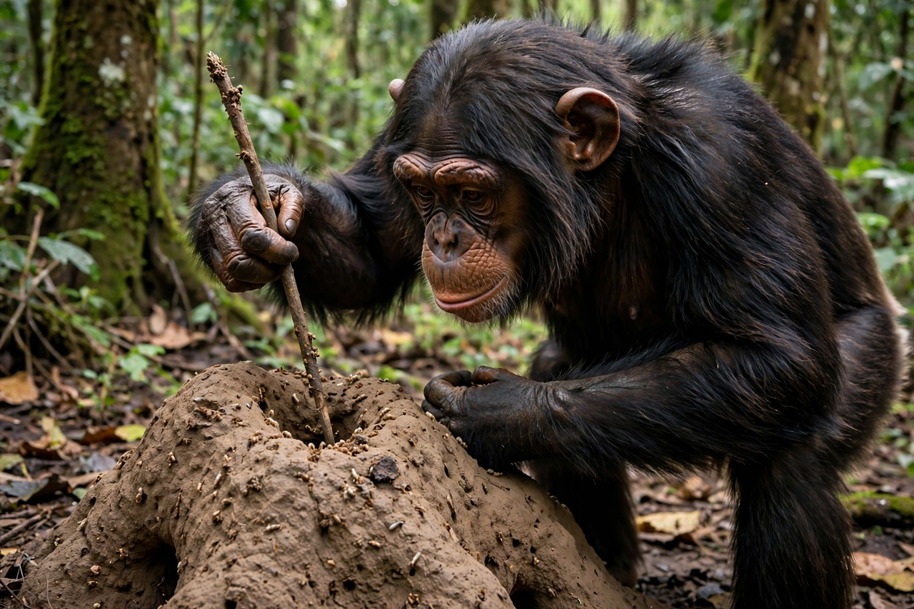

Animal cognition
From Wikipedia, the free encyclopedia

Animal cognition is the study of the mental capacities of non-human animals — how they perceive, learn, remember, solve problems, communicate and, possibly, experience consciousness. Drawing on Comparative psychology, Ethology and neuroscience, the field investigates abilities from navigation in bees to tool manufacture in crows and self-recognition in great apes and dolphins.
History
Charles Darwin argued for mental continuity between humans and other animals, but the behaviourist revolution of the early twentieth century banned talk of animal minds. The cognitive turn began with Wolfgang Köhler's insight experiments with chimpanzees (1910s), Karl von Frisch's decoding of the honeybee Waggle dance, and gathered pace after the 1970s with Donald Griffin's 'cognitive ethology'. Researchers now guard against anthropomorphism with controls descended from the Clever Hans affair — the horse whose apparent arithmetic was actually cue-reading.
Capacities
Documented capacities include: episodic-like memory in scrub-jays (caching what, where and when); tool manufacture in New Caledonian crows; numerical competence in bees and fish; metacognition in dolphins and macaques; mirror self-recognition in great apes, dolphins, elephants and magpies (the Mirror test); and elements of communication — referential calls in Vervet monkeys, symbolic vocabularies in parrots (Alex) and signing apes (whose linguistic claims remain contested).
Theory of mind and consciousness
Whether any animal attributes beliefs to others — a Theory of mind — is intensely debated: chimpanzees pass some false-belief anticipatory-looking tests, and ravens track what competitors have seen. In 2012 the Cambridge Declaration on Consciousness asserted that many animals possess the neurological substrates of consciousness; the 2024 New York Declaration extended the 'realistic possibility' of experience to all vertebrates and many invertebrates.